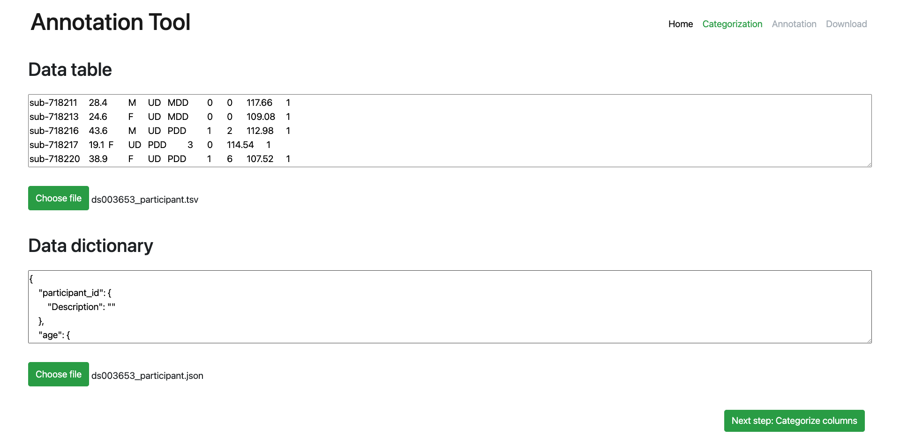
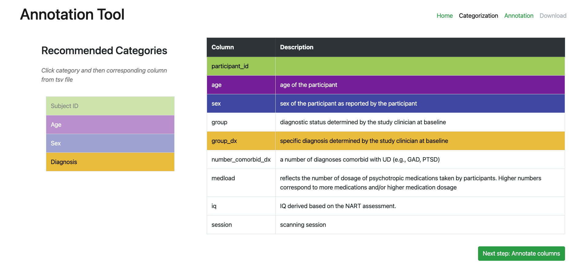
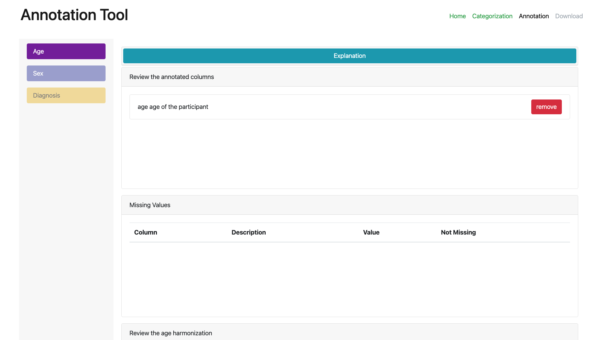
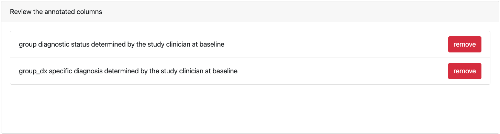

The Neurobagel Annotation Tool
Neurobagel's annotation tool takes BIDS-style phenotypic data and corresponding data description files and gives users the ability to annotate their data using the Neurobagel data model for preparation to inject that modeled data into Neurobagel's graph database for federated querying.
The annotation tool is a Vue application, developed in JavaScript using a variety of tools including Nuxt, Cypress, and BootstrapVue.
Quickstart
The demo version of the annotation tool is hosted at https://annotate.neurobagel.org/.
Local Installation
Building and running
# First, clone the repository at https://github.com/neurobagel/annotation_tool
# Install dependencies
$ npm install
# Serve with hot reload at localhost:3000
$ npm run dev
# Build for production and launch server
$ npm run build
$ npm run start
# Generate static project
$ npm run generate
Deployment
To deploy the static build on GH pages, run
npm run generate
npm run deploy
See the Nuxt documentation for more details.
Developer information
use node v16.x LTS!
 The Annotation Tool is built with the Nuxt framework and currently depends on Nuxt2.
Nuxt2 does not support node versions beyond the v16 LTS (see e.g. this Github issue).
If you want to run the tool locally, make sure you are using node v16.x.
A good way to manage different node versions is to use the node version manager tool.
The Annotation Tool is built with the Nuxt framework and currently depends on Nuxt2.
Nuxt2 does not support node versions beyond the v16 LTS (see e.g. this Github issue).
If you want to run the tool locally, make sure you are using node v16.x.
A good way to manage different node versions is to use the node version manager tool.
Annotation Workflow
- Upload data table (and/or data dictionary)
- Linking columns you want annotated with Neurobagel metadata categories
- Annotate the values of the those categirzed columns
- Download an annotated version of a BIDS-style data dictionary for your dataset
General Navigation
There are two means of moving forward to the next step in the annotation tool's workflow: (1) the navbar at the top right of the screen which features the page names, and (2) the next page buttons on the bottom right of each page.
However, special criteria for each page need to be be met in order to move forward. Instructions are offered above the next page button while those conditions are still as of yet unmet. (These are denoted below under Next page criteria.) After having done so, the next page's name in the navbar will turn from gray to green, and the next page button will turn from gray to green as well.
Page Instructions
Home (Upload) page
The Home page is where you can upload data tables and dictionaries either for a brand new annotation or to continue a previous annotation session.

Selecting a data table (participants.tsv)
- Click the 'Choose File' button in the 'Data Table' section of the page to upload the BIDS-style phenotypic data file you wish to annotate. (One typical name for this file is
participants.tsv.) - Once uploaded a preview of the tsv file will be shown in the 'Data Table' text box. You may want to examine the preview contents in the text box to ensure you have uploaded the file that you expect to be annotating.
While the annotation tool does not transform data with annotations, it will link the columns found in the uploaded tsv file to categories Neurobagel's metadata schema. Which columns the tool links is up to you on the next page: the categorization page.
Selecting a data dictionary (optional) (participants.json)
- In order to upload your data dictionary, a data table must be uploaded first. This allows the annotation tool to understand the full structure of your data and the add its own entries for annotation purposes to a new, enhanced version of the data dictionary you will be uploading.
- Click the now-enabled 'Choose File' button in the 'Data Dictionary' section of the page to uploads the BIDS-style data dictionary.
- Once uploaded a preview of the json file will be shown in the 'Data Dictionary' text box. You may want to examine the preview contents in the text box to ensure you have uploaded the file that you expect to be annotating.
Next page criteria: A participants.tsv file must be uploaded to proceed to categorization of that dataset's columns
Categorization page
The Categorization page is where you link the columns in your data table to the categories found in Neurobagel's metadata schema. Current categories include 'Subject ID', 'Age', 'Sex' and 'Diagnosis'. Aside from the 'Subject ID' which is a special case, categories represent different data types, 'Sex' and 'Diagnosis' are categorical while 'Age' is continuous.

Categorizing data table columns
- Select a category in the category selection component on the left.
- Select a column from your uploaded
participants.tsvin the table on the right. (Its description from yourparticipants.json- if uploaded - will be seen here as well.) This will paint the column's table row with the same color as the category you have selected. This column is now linked to that category and you will be able to annotate its values on the annotation page.
Next page criteria: A column must be annotated as holding a 'Subject ID', and at least one other column must be linked with one of the other categories
Annotation page
The Annotation page is where you can annotate the values in your uploaded participants.tsv. The Neurobagel categories which you have linked columns to on the previous Categorization page are listed as tabs on the left.
- Clicking on each category tab will allow you to use the interface to annotated the values of each categorized column.
- When multiple columns have been linked with a category, each column will have its own column in the annotation components on the page.
- Any value in the annotation interface can be marked as a 'missing value' (i.e.
'N/A', empty string, etc.)

Age rows (continuous values)
All values for columns categorized as Age can be annotated here with a set of continuous value transformations. Clicking on the dropdown will allow you to select a transformation. Current transformations available include bounded, euro, float, int, and iso8601. The raw values from the column are shown and when a transformation type is selected a preview of how that transformation would alter each raw value is shown.
Sex and Diagnosis rows (categorical values)
All values for columns categorized as either Sex or Diagnosis can be annotated here with labels that come from Neurobagel and the controlled vocabularies it utilizes to help form the Neurobagel metadata model. Clicking on the drop down on each raw value row will allow you to select an appropriate Neurobagel label for this value.
Missing values
Any continuous or categorical value can be marked as 'missing' via the adjacent Mark as missing button. This will remove the value from the annotatable values and place it in the Missing values section on the page. This can be undone for any value by clicking the Not Missing button in this section of the page.
Unlinking columns
Data table columns can also be unlinked (e.g. un-categorized) on the Annotation page in this section of the page labeled Review the annotated columns. This will stop the column from being annotated and have any annotations made for its values removed. The change is also reflected on the previous Categorization page.

Next page criteria: At least one annotation must be made from any of the categorized columns
Download page
Click the download annotated data button to download what we refer to an 'annotated' data dictionary that is a Neurobagel-enhanced BIDS-style data dictionary. This file will include any entries in the original data dictionary that you uploaded on the home page.